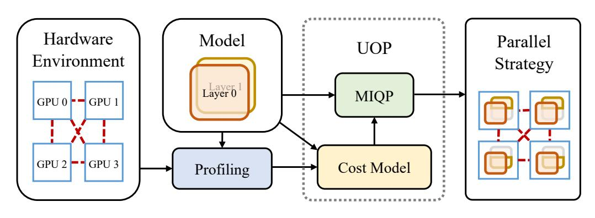

Hao Lin @ Aliyun
 |
Hao Lin R&D Engineer, Platform of Artificial Intelligence (PAI), Aliyun Computing Co., Ltd., Hangzhou, Zhejiang, China. |
Biography
Currently, I am a R&D engineer in Aliyun Computing Co., Ltd.'s Platform of Artificial Intelligence (PAI). My research interest includes AI infrastructures, especially those for alignment tasks.
Prior to this position, I received Master degree from Department of Computer Science and Technology of Nanjing University in June, 2024. My thesis was about AI infrastructures for enhancing the efficiency of training LLMs. My supervisor was Professor Wu-Jun Li.
Before that, I received B.Sc. degree from Department of Computer Science and Technology of Nanjing University in June, 2021. In the same year, I was admitted to pursue my Master degree without entrance examination.
Education
- Master, Nanjing University, China. (09/2021 ~ 06/2024)
- Supervisor: Professor Wu-Jun Li.
- GPA: 91.9/100.
- B.Sc., Nanjing University, China. (09/2017 ~ 06/2021)
- GPA: 4.51/5.00, Rank: 11/173.
Working Experience
- Platform Framework and Optimization R&D Engineer. Aliyun Computing Co., Ltd. (06/2024 ~ Now)
- Core contributor of ChatLearn, a flexible and efficient large-scale RLHF framework.
- Training Qwen2.5, Qwen2.5-Max, QwQ-32B-Preview, and QwQ-Max-Preview.
- QwQ-32B and QwQ-Max are about to be released!
- Platform Framework and Optimization R&D Intern. Aliyun Computing Co., Ltd. (06/2023 ~ 09/2023)
- Contributor of ChatLearn, a RLHF framework for training Qwen1.5 and Qwen2
- Support parameter synchronization, flexible batch size generation and verify the performance.
- Support online parallel strategy adaptation based on Megatron-LM.
- Deep Learning Framework R&D Intern. Baidu Co., Ltd. (06/2021 ~ 08/2021)
- Mainly resposible for operator development and testing.
- Participate in compilation acceleration and dynamic graph performance optimization.
- Related code is made public at https://github.com/PaddlePaddle/Paddle
Publication
|  |
We propose an automatic parallelism framework UniAP. It utilizes MIQP to jointly optimize DP, TP, FSDP, and PP to enhance efficiency in training large models. Experimental results show that UniAP outperforms SOTA by up to 3.80x in throughput and reduces strategy optimization time by up to 107x across five Transformer-based models. |
(*: equal contribution. †: corresponding author.)
Award
南京大学优秀毕业生. Outstanding Graduates of Nanjing University. (04/2024)
南京大学优秀研究生. Excellent Graduate Student of Nanjing University. (11/2023)
学业奖学金一等奖. The First Prize of Academic Scholarship. (11/2021, 11/2022, 11/2023)
福佑奖学金. Fuyou Scholarship. (12/2020)
国家奖学金. National Scholarship. (09/2019)
南京大学优秀学生. Excellent Student of Nanjing University. (12/2019)
南京大学人民奖学金二等奖. The Second Prize of the People's Scholarship. (11/2018)
Teaching Assistant
C程序设计语言. C Programming Language. (For undergraduate students, Spring 2023)
数据库概论. Introduction to Databases. (For undergraduate students, Autumn 2022)
程序设计基础. Basics of Programming. (For undergraduate students, Spring 2022)
Correspondence
E-mail Address
baodong.lh{AT}alibaba-inc.com (Business)
hao.lin.msc{AT}gmail.com (Private)